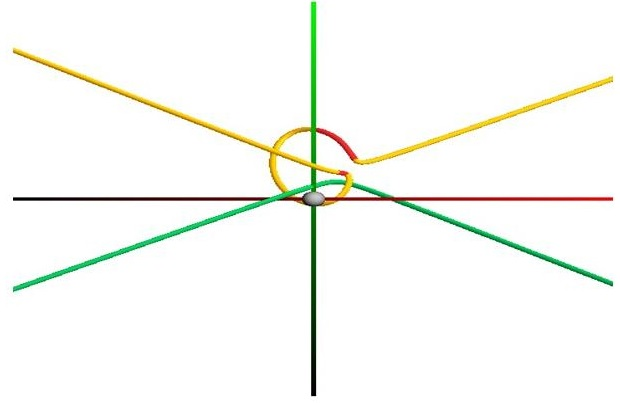
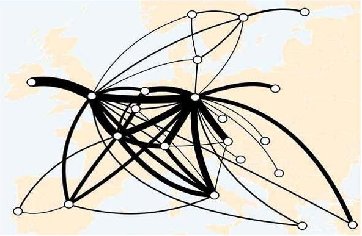

Ritesh Sharma
Electrical Engineering and Computer Science, School of Engineering
University of California, Merced
Merced, California, United States
Email: rsharma39 (at) ucmerced (dot) edu
I am a first year PhD student in Electrical Engineering and Computer Science at the University of California, Merced. I am working on 3D Free-space Exploration and Path planning in higher dimensions
under the supervision of Professor Marcelo Kallmann. Prior to joining at UC Merced, I worked as Senior Graphics Programmer at Passur Aerospace Inc. I holds a master's degree in Computer Science from the school of Electrical
Engineering and Computer Science at Oregon State University where I was advised by
Dr. Eugene Zhang. The title of my master's thesis was "Interactive Design and Transition Point Analysis of 3D Linear Symmetric Tensor
Fields". My areas of interest are Computer Graphics, Geometry Processing, Scientific Visualization, Virtual and Augmented Reality.
News
| 03.07.2019 | Selected as Student Volunteer at Eurographics 2019,May 6th-10th, Genoa, Italy |
| 03.01.2019 | Received Spring 2019 EECS Bobcat Travel Fellowship Award |
| 08.15.2018 | Joined PhD Program in EECS at University of California, Merced |
| 05.08.2017 | Joined as Senior Graphics Programmer at Passur Aerospace Inc., Orlando, Florida |
| 03.13.2017 | Paper titled "Force-directed layout of origin-destination flow maps" accepted for IJGIS |
| 03.08.2017 | Defended M.S thesis on "Interactive Design and Transition Point Analysis of 3D Linear Symmetric Tensor Fields" |
| 02.28.2017 | Paper titled "Maximum Number of Transition Points in 3D Linear Symmetric Tensor Fields" accepted for TOPOVIS 2017 |
| 08.11.2017 | Paper titled "Design principles for origin-destination flow maps" accepted for journal of CGIS |
| 12.05.2016 | Paper titled "Feature surfaces in symmetric tensor fields based on eigenvalue manifold" invited for presentation at SIGGRAPH Asia 2016 |
| 10.27.2016 | Paper titled "Feature surfaces in symmetric tensor fields based on eigenvalue manifold" invited for presentation at IEEEVIS WEEK 2016 |
| 04.04.2016 | Joined as an Intern in Mathematica Algorithm R&D team, Wolfram Research Inc., Champaign, Illinois |
| 03.01.2016 | Paper titled "Feature surfaces in symmetric tensor fields based on eigenvalue manifold" accepted at IEEE TVCG |
Publications
 |
Bernhard Jenny, Daniel M. Stephen, Ian Muehlenhaus, Brooke E. Marston, Ritesh Sharma, Eugene Zhang, Helen Jenny, Force-directed layout of origin-destination flow maps, Internaional Journal of Geographical Information Science (IJGIS), 2017. [Link] |
 |
Bernhard Jenny, Daniel M. Stephen, Ian Muehlenhaus, Brooke E. Marston, Ritesh Sharma, Eugene Zhang, Helen Jenny, Design Principles for Origin-destination Flow Maps, Cartography and Geographic Information Science (CaGIS), 2016. [Link] |
 |
Jonathan Palacios, Harry Yeh, Wenping Wang, Yue Zhang, Robert S. Laramee, Ritesh Sharma, Thomas Schultz, and Eugene Zhang, Feature Surfaces in Symmetric Tensor Fields Based on Eigenvalue Manifold, IEEE Transactions on Visualization and Computer Graphics, Vol 22(3), 2016, pp. 1248-1260. Also appeared in SIGGRAPH ASIA 2016 and IEEEVIS 2016. [Link][Video] |
 |
Ritesh Sharma, Shital S. Jadhav, Debabrata Tripathy, Harshala V. Sardar, and Gopal R. Patil, Virtual Laboratory: An alternative approach to Urban Transportation Systems Planning Lab, Transportation Research Board, 93rd Annual Meeting, Washington, D.C, USA, January 12-16. 2014. [Link] |
Conference Proceedings
|  | Yue Zhang, Ritesh Sharma, Eugene Zhang, Maximum Number of transition points in a 3D Linear Symmetric Tensor Fields, Topology Based Methods in Visualization 2017 (TopoInVis 2017), Tokyo, Japan, Feb 27th-28th, 2017 |
 |
Victoria Nelson, Ritesh Sharma, Eugene Zhang, Andreas Schmittner, Bernhard Jenny, 3D visualization of global ocean circulation,AGU Fall Meeting, San Fransisco, CA, Dec 18, 2015. |
|  | Daniel Stephen, Bernhard Jenny, Ritesh Sharma, Eugene Zhang, Ian Muehlenhaus, (2015). Automatic Flow map creation using a force-directed layout. North American Cartographic Information Society Annual Meeting, Minneapolis, MN, Oct. 15, 2015 |
Under Review
Yue Zhang, Lawrence Roy Ritesh Sharma, Eugene Zhang, Maximum Number of transition points in a 3D Linear Symmetric Tensor Fields, Topological Methods in Data Analysis and Visualization(Published by Springer), 2017 (minor revision).
Interactive Design and Transition Point Analysis of 3D Linear Symmetric Tensor Fields
3D symmetric tensor fields have a wide range of applications, such as in solid and fluid mechanics, medical imaging, meteorology, molecular dynamics, geophysics and computer graphics. There has been much research carried out in this field, yet our knowledge of the tensor field is still at its initial stage to completely understand the behavior of 3D linear tensor fields. To understand the behavior and to design such applications, topology plays an important role. The degenerate points are the most studied topological feature of symmetric tensor fields. Though several attempts have been made to understand such features, still none of them seems to be complete. In this work, we provide an interactive interface to study such features. We also study the maximum number of transition points in a linear tensor field and classification of wedge and trisector along the degenerate curves. Finally, we provide an insight over the upper and lower bound on the number of transition points in a linear tensor field. This work is also a part of my MS thesis.

Degenerate patterns |

Interactive User Interface |
RendermanLink: Interface between Wolfram's Mathematica and Pixar's Renderman
In this project, I built a software package in C to connect Wolfram's Mathematica with Pixar's Renderman.The main aim of this project is to utilize the rendering power of Renderman Engine to produce a high resolution images without being concerned with the syntax used for Renderman API ie., the user with just a knowledge of Wolfram Language can generate high resolution images in no time. This work was part of my internship at Wolfram Research Inc. in their Mathematica Algorithm R&D department.

Script in Mathematica Editor |

Result |
Unsignalized T-intersection Simulation
In this project, we (Ankita Chaudhary and I worked under the supervision of Professor Gopal R. Patil) created a simulation to showcase the actual movement of vehicle on an unsignalized T-Intersection using Cellular Automata technique. This simulaton serves the purpose of training student (pursuing transportation engineering) for an actual survey or data collection.
Class Project
Pool Game Animation [Code] |
Smoke Visualization |
Academics
Doctor of Philosophy in Computer Science,
University of California Merced, California, United States
Specialization: Computer Graphics and Animation
Advisor: Marcelo Kallmann
August 2018 - Present
Master of Science in Computer Science,
Oregon State University, Oregon, United States
Specialization: Computer Graphics and Visualization
Advisor: Eugene Zhang
January 2014 - March 2017
Bachelor of Technology in Computer Science and Engineering,
West Bengal University of Technology, West Bengal, India
Specialization: Computer Science and Engineering
August 2006 - June 2010
Research Experience
March 2014 - Dec 2016
Graduate Research Assistant,
Computer Graphics and Visualization Group
Oregon State University, Corvallis, Oregon
Description: Interactive Design and Analysis of 3D Symmetric Linear Tensor Fields, improved techniques for tensor field topologies(such as feature surfaces and degenerate curves) extraction.
October 2010 - December 2013
Research Assistant,
Transportation Systems Engineering Group
Indian Institute of Technology Bombay
Description: Developed an accurate, reliable and autodidactic web-based virtual laboratory
Principal Investigator: Dr. Gopal R. Patil, Associate Professor, Civil Engineering Department, Indian Institute of Technology Bombay, India
Professional Experience
May 2017 - August 2018
Senior Graphics Programmer,
Passur Aerospace Inc, Orlando, Florida, USA
Description: Working on rendering and visualization of flight tracking system.
April 2016 - August 2016
Intern, Mathematica Algorithm R&D
Wolfram Research Inc, Champaign, Illinois, USA
Description: Developed software package to connect Wolfram's Mathematica with Pixar's Renderman,Software package testing for geometry primitives, plot functions and other functionalities used for 3D Printing.
Manager: Dr. Charles Pooh, Manager, Discrete Compuatation, Wolfram Research Inc, USA
Teaching Experience
August 2018 - Present
Teaching Assistant,
School of Electrical Engineering and Computer Science
University of California, Merced, California
Courses: Data Structures (CSE 30)
January 2014 - March 2016
Graduate Teaching Assistant,
School of Electrical Engineering and Computer Science
Oregon State University, Corvallis, Oregon
Courses:Analysis of Algorithm(CS 325), Introduction to Databases(CS 340),Opertaing Systems I(CS 344) and Translators(CS 480)
Major Courses, University of California, Merced
CS 287 Computer Animation and Simulation
Major Courses, Oregon State University
CS 551 Computer Graphics
CS 552 Computer Animation
CS 554 Geometry Modeling
CS 556 Computer Vision
CS 557 Computer Graphics Shaders
CS 519 Special Topic: Vector and Tensor Field Visualization
CS 572 Computer Architecture
CS 575 Introduction to Parallel Programming
CS 515 Algorithm and Datastructures
MTH 551 Numerical Linear Algebra
MTH 552 Numerical Solution of Ordinary Differential Equations
Miscellaneous
Received Spring 2019 EECS Bobcat Travel Fellowship Award
Received Honorary Citizenship of Corvallis, Oregon for contributions and achievements at Oregon State University by the mayor of city of Corvallis, Oregon, United States
Mentored a senior undergraduate student under REU (Research Experience for Undergraduate) Program during Summer 2015, funded by NSF.
Poster Presentation on Mode Surface Extraction Using A-Patches at Engineering Research Expo held at Oregon Convention Center, Portland, Oregon, Mar 4, 2015.
Active member of technical and scientific committee in the International conference for Transportation Planning and Methodologies for Developing Countries(TPMDC), 2012 at IIT Bombay.
Active member of organising committee in National Conference, InTranSe 2011, Conducted by CDAC, Trivandrum at IIT Bombay.
Awarded a certificate of merit by Howrah Municipal Corporation for securing highest marks in Secondary School Examination in the entire ward(a small divsion of a city).
Lead the school quiz team upto top 8 schools in the QUEST, a Science Quiz competition conducted by Birla Industrial & Technological Museum, Kolkata.
Won 2nd prize in the Kolkata chapter of All Bengal SPELLinc Competition, 2003 and led team to Grand Finale of All Bengal SPELLinc Competition, 2003.
Won 2nd prize in the Quiz Contests conducted by Society of Human Growth, Kolkata and Salkia Bharat Sangha, Howrah in the year, 2002.
Won 3rd prize in the Drawing competition conducted by Kolkata Traffic Police during Road Safety Week, 2001.
Wrote poems for the school magazine and the poem named A Land called India was published in the Hindustan Times(one of the leading newspaper in India).
Participated in two day workshop on "ASTRONOMY FOR ENGINEERS" conducted by Department of Engineering Sciences and Humanities, Siliguri Institute of Technology.